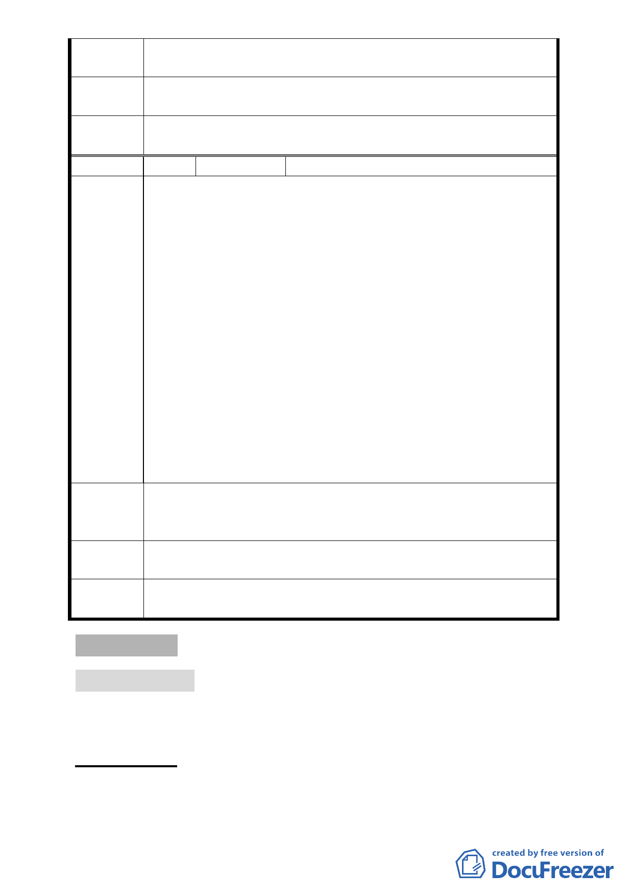

價購、徵收、容積移轉、或者准予申請核發畸零地合併使用證
明，得以申購鄰地以達建築面積使用，以維市民權益。
專案小組
審查結論
併建議方案處理，提大會審議
委員會決
議
同編號 1
編 號 19
陳情人 台北市大安區華聲里里辦公處
1. 本里在此提出強烈的抗議，本里並沒有收到今天這個會議的
通知，這是令人非常的不解，尤其北側道路的開闢關係到本
里的交通情形，主辦單位仍然迴避寄通知給本里。請主辦單
位不要挑選寄發的單位，而且不能只通知少數人，請主辦單
位下次必須發給鄰近的各里。
陳情理由
2. 依照目前台北文化體育園區預計開闢的北側道路，其出口將
規劃在光復南路與市民大道的交叉口，本里在 4 月 23 日的
說明會中才知道這個消息。因此本里希望，各位委員能要求
主辦單位能再開一次說明會，而且時間地點應該以便民為
主，而不是選擇在居民不方便的時段。本里在此強烈抗議，
反對北側道路的出口在光復南路與市民大道交叉口。光復南
路與市民大道的交通原本就非常擁擠，不只是交通尖峰時段
而已，平常就是如此。如果，再將北側道路的出口往交叉口
規劃，大家可以想像交通會有多擁擠。本里居民已開始有大
量的反彈聲音，希望主辦單位能審慎處理，否則民怨將是大
家無法想像的。
本里不反對臺北市的公共建設，但台北文化體育園區選在松山
建議辦法 菸廠就是一個錯誤的選擇。懇請委員們不只是為大企業著想，
力求建設中應多想像臺北市到底需要成為甚麼樣的一個城市。
專案小組
審查結論
同編號 2
委員會決
議
同編號 1
叄、臨時提案
臨時報告案 一
案名：為臺北市政府檢送「臺北市老舊市場再生專案計畫-私有市
場更新行動計畫」案，報請 公鑒。
案情概要說明：
一、 臺北市私有傳統零售市場，多數座落於市區節點，為地區鄰
里性之商業中心，與市民日常生活息息相關。惟現有之私有
- 20 -